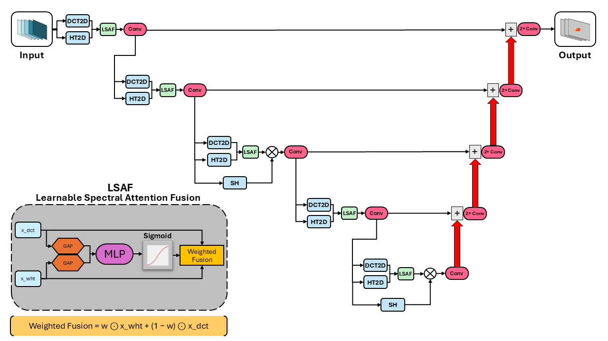

Projects
Research projects and coursework across machine learning, signal processing, and embedded systems.
Research
-

Wildfire Spread Prediction using U-Nets
Graduate Research Assistant · University of Illinois Chicago, Jan 2026–present
-
🎮
Game Theory & Agents
Graduate Research Assistant · Northwestern University, May 2026–present
-
📡
Spectral Analysis on FPGA for Detection of Astrophysical Signals
Research Intern · Observatoire de Paris | PSL, Jun–Jul 2024 · Telemetry, Sensors, FPGA
University of Chicago — Exchange Year (2024–2025)
-
🌍
-
☀️
Exploring Short-Term Activity Cycle of the Sun at Different Wavelengths
University of Chicago, Nov–Dec 2024 · Scikit-Learn, NumPy
-
🚗
Electric Vehicle Population in Washington State
University of Chicago, Nov 2024 · Data Science, Pandas